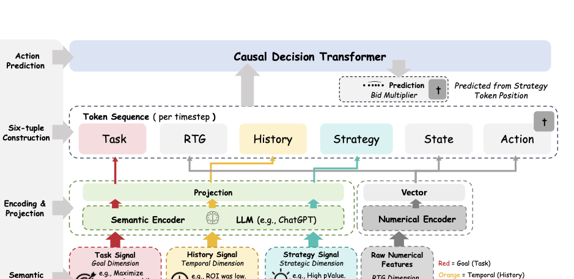
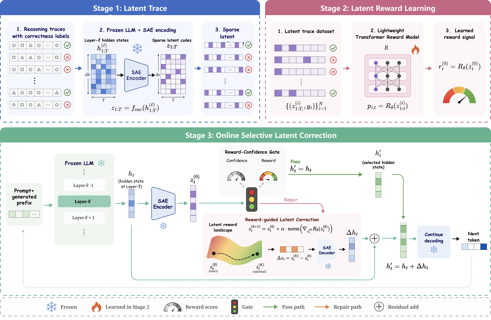
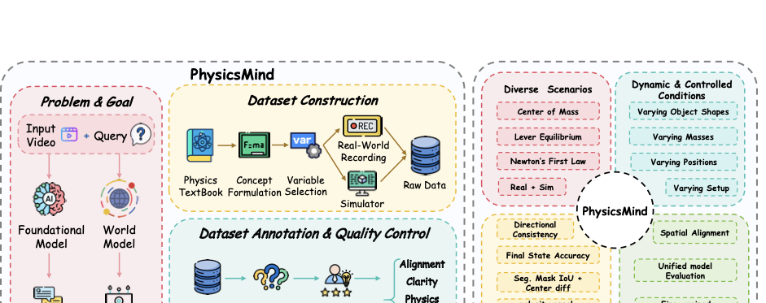
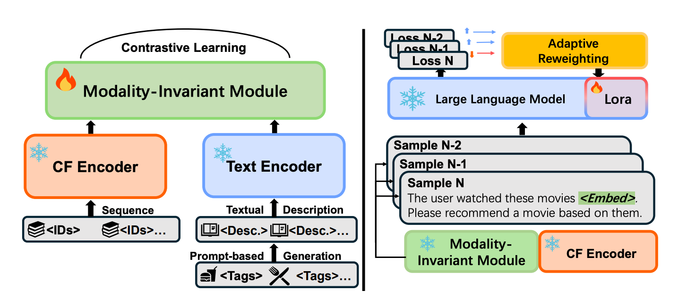
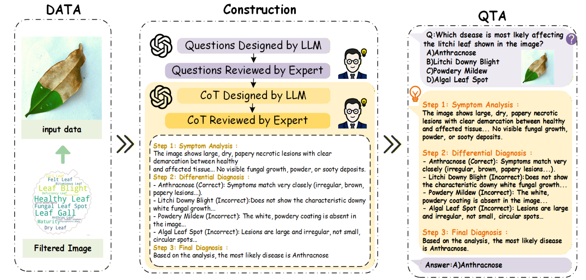
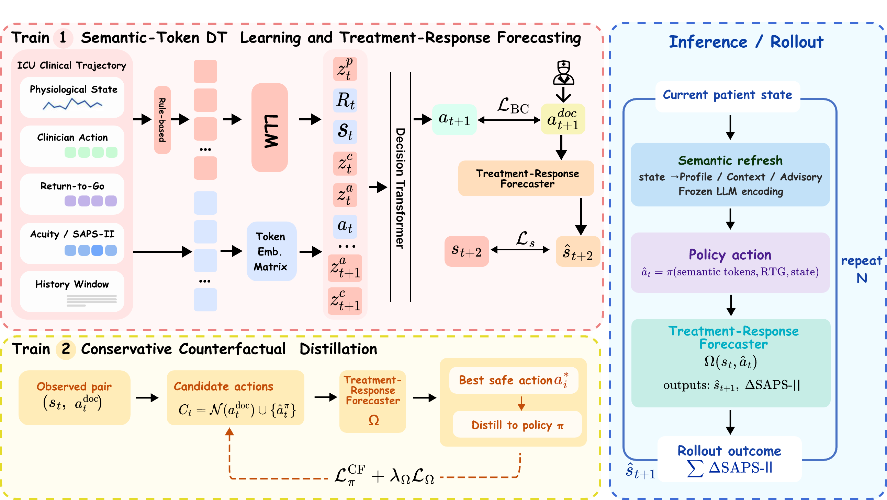
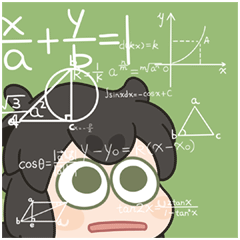

About

I am an undergraduate student in Electronic Science and Technology at South China Agricultural University, based in Guangzhou. My recent work focuses on embodied AI, especially vision-language-action (VLA) systems and world models. I have completely mastered the art of balancing research and life. Let me strike that out until it is true. For now, closing my laptop for five minutes counts as progress.
Over the past year, I worked on agricultural foundation models in Professor Yubin Lan's lab at South China Agricultural University, collecting field images in lychee orchards, building multimodal question-answering data, helping design Lychee-Bench / Lychee-Mind, and training Qwen2.5-VL-7B with SFT and GRPO. I then interned at City University of Hong Kong, contributing to SemBid on language representations for auto-bidding, PhysicsMind for unified real-and-simulated physical reasoning evaluation, and Latent Reward Steering for inference-time reasoning guidance. Later, I joined the HCP Lab at Sun Yat-sen University to study tactile perception and world models. I will next join Fudan University to continue my studies and research under the supervision of Professor Ruoxi Jiang.
My current interests include VLA and world models for embodied AI.
In my free time, I keep up with The Legend of Hei and hope the next update arrives soon.
News
-
🎓 Admitted to the College of Computer Science and Artificial Intelligence at Fudan University, where I will work with Prof. Ruoxi Jiang!
-
🎉 Latent Reward Steering accepted at EMNLP 2026!
-
🎤 Two papers selected for oral presentation at CIKM 2026!
-
🎉 Two papers accepted at CIKM 2026!
On the Role of Language Representations in Auto-Bidding: Findings and Implications and ClinSDT: LLM-Encoded Clinical Semantic Guidance for Sepsis Treatment via Decision Transformer.
-
On the Role of Language Representations in Auto-Bidding: Findings and Implications published on arXiv.
-
PhysicsMind published on arXiv.
Publications
(* equal contribution · † corresponding author)


Latent Reward Steering: An Adaptive Inference-Time Framework that Implicitly Promotes Cognitive Behaviors in Reasoning LLMs

PhysicsMind: Sim and Real Mechanics Benchmarking for Physical Reasoning and Prediction in Foundational VLMs and World Models

Beyond Uniform Alignment: LLM-based Recommendation

Lychee-Bench: A Process-Level Vision Language Benchmark for Trustworthy Lychee Orchard Diagnosis

ClinSDT: LLM-Encoded Clinical Semantic Guidance for Sepsis Treatment via Decision Transformer

Research Experience
-
2025.11 - 2026.05
Research Internship, City University of Hong Kong
Mentor: Dr. Youhua Li
-
2025.05 - 2025.11
Collaborative Research on Agricultural Foundation Models
Agricultural foundation models · Prof. Yubin Lan · South China Agricultural University
Internships
-
Aug. 2026 – Present
Beijing MoKe Robotics Technology Co., Ltd.
Research Intern · Embodied AI / VLA
-
May 2026 – Aug. 2026
HCP Lab, Sun Yat-sen University
Research Intern · Tactile Perception and World Models

Awards
- National Scholarship (2025) · Top 1%
- National Undergraduate IC Innovation and Entrepreneurship Competition · Second Prize
- China Undergraduate Mathematical Contest in Modeling · Provincial Second Prize
- Outstanding Student Leader (2025)
- Outstanding Academic Conduct Award (2024, 2025)